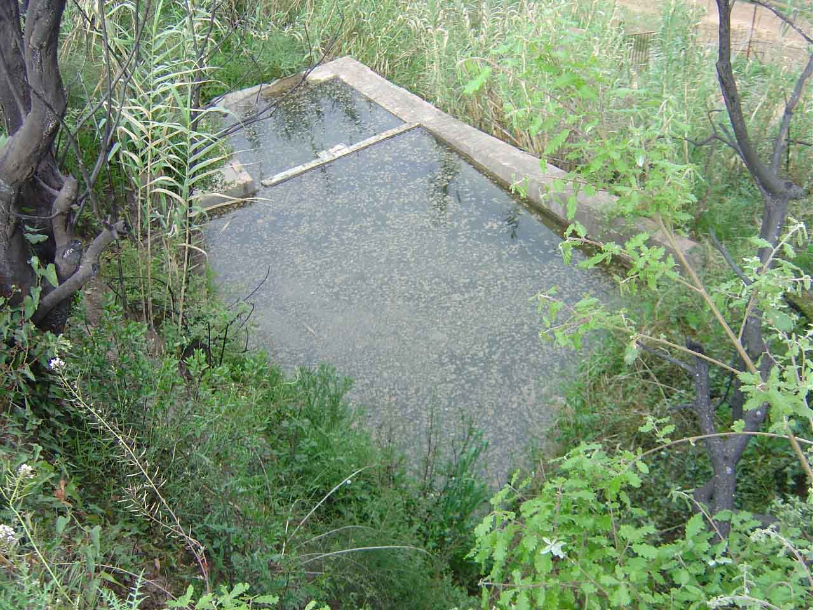
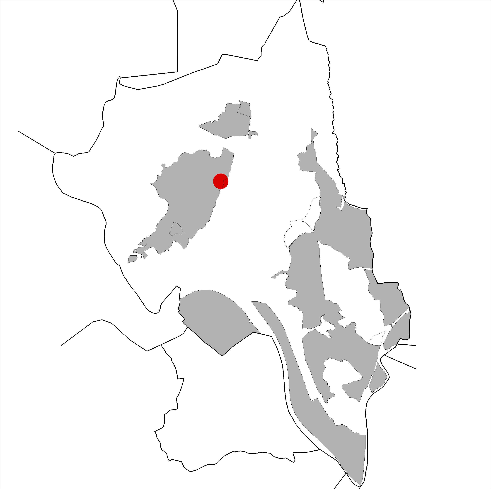

|  |  |
Nom de l’element: Dipòsit i mina d’aigua de Santeugini
Clau d’identificació: A.23
Nucli o indret: Barri de Can Santeugini (final del c/ Francolí).
UTM: X= 413.354, Y= 4.593.951.
Règim del sòl: Sòl urbà.
1.1. Època de construcció i tipologia:
Dipòsit d’aigua de l’antiga mina de Santeugini. La bassa té unes dimensions aproximades de 3 x 6m i acull, actualment, diverses espècies de fauna aquàtica.
1.2. Estat de conservació:
Bo.
1.3. Ús actual:
Patrimoni històric i ecològic.
1.4. Accés:
Accés fàcil des del camí de terra que parteix del c/ Francolí (Can Santeugini).
Patrimoni històric i importància ecològica per les diverses espècies de fauna aquàtica que acull, especialment, gripaus, granotes, etc. També actua com a abeurador per a la fauna dels boscos dels voltants.
3.1. Usos admesos:
3.2. Condicions d’ordenació:
3.3. Accés i serveis:
Accés des del camí de terra que parteix del final del c/ Francolí (Can Santeugini).
BPU (Bé Protegit Urbanísticament)